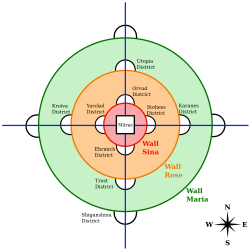

SEJARAH
- Hijau = Maria
- Oranye = Rose
- Merah = Sina
Kisah Attack on Titan berpusat pada sebuah peradaban di dalam tiga dinding melingkar. Menurut pengetahuan yang disebarkan secara lokal, peradaban ini merupakan sisa-sisa terakhir peradaban manusia yang masih ada. Penduduknya, yang dikenal sebagai Eldia, telah diyakinkan bahwa lebih dari seratus tahun yang lalu, umat manusia berada di ambang kepunahan setelah kemunculan raksasa humanoid yang disebut Titan, yang menyerang dan memakan manusia yang terlihat untuk memakan Titan shifter agar mereka dapat kembali ke wujud manusia. Sisa-sisa terakhir umat manusia mundur di balik tiga dinding konsentris dan menikmati kedamaian selama kurang lebih satu abad. Di dalam dinding, gagasan untuk menjelajah ke luar sangat dicemooh dan tidak dianjurkan. Untuk melawan Titan, militer negara tersebut menggunakan Peralatan Manuver Vertikal (VME), juga disebut Peralatan Manuver Omni-Directional (ODM Gear)—seperangkat kait pengait yang dipasang di pinggang dan propulsi bertenaga gas yang memungkinkan mobilitas dalam tiga dimensi. Pedang yang terbuat dari baja ultrakeras digunakan bersama dengan perlengkapan ini, dan akhirnya senjata seperti peluncur roket yang disebut Thunder Spear dikembangkan oleh komandan Hange Zoe.
Titan Murni diciptakan dengan menyuntikkan cairan tulang belakang Titan ke dalam tubuh Eldia. Jika seorang Titan Murni memakan tubuh manusia seseorang yang memiliki salah satu dari Sembilan Titan, Eldia tersebut akan kembali ke wujud manusia dan mendapatkan kekuatan Shifter tersebut, yang kemudian akan membuat mereka dikutuk untuk hidup hanya 13 tahun lagi. Jika kekuatan mereka tidak diwarisi oleh Eldia lain sebelum kematian mereka, kekuatan mereka akan diwarisi oleh bayi Eldia yang lahir tak lama setelahnya, terlepas dari jarak atau hubungan darah. Seiring berjalannya cerita, sifat asli para Titan dan keberadaan peradaban di luar tembok terungkap.
Ada berbagai jenis titan, antara lain :
1. Titan Murni adalah yang terlemah dan paling umum, dengan perilaku yang mudah diprediksi sehingga mudah dibunuh.
2. Titan Abnormal adalah Titan Murni yang perilakunya lebih sulit diprediksi, sehingga lebih berbahaya.
3. Sembilan Titan, juga dikenal sebagai Titan Shifter, terdiri dari Titan Attack, Colossal, Armored, Female, Beast, Jaw, Cart, War Hammer, dan Founding. Mereka adalah Titan terkuat; masing-masing dapat berubah bentuk antara manusia dan Titan untuk mengakses kemampuan Titan mereka. Banyak Titan Shifter memiliki kemampuan untuk mengeraskan bagian tubuh tertentu sesuka hati, biasanya agar hampir tidak dapat ditembus, atau untuk memperkuat serangan mereka selama pertempuran.